install.packages("tidyverse") # Installing tidyverse package, includes ggplot2 and other packages such as dplyr, readr, tidyrData Visualization with ggplot2
- Describe the role of data, aesthetics, and geoms in ggplot functions.
- Choose the correct aesthetics and alter the geom parameters for a scatter plot, histogram, or box plot.
- Layer multiple geometries in a single plot.
- Customize plot scales, titles, themes, and fonts.
- Apply a facet to a plot.
- Apply additional ggplot2-compatible plotting libraries.
- Save a ggplot to a file.
- List several resources for getting help with ggplot.
- List several resources for creating informative scientific plots.
- What is ggplot2?
- What is mapping, and what is aesthetics?
- What is the process of creating a publication-quality plots with ggplot in R?
Introduction to ggplot2

ggplot2 is a plotting package that makes it simple to create complex plots from data in a data frame. It provides a more programmatic interface for specifying what variables to plot, how they are displayed, and general visual properties. Therefore, we only need minimal changes if the underlying data change or if we decide to change from a bar plot to a scatter plot. This helps in creating publication-quality plots with minimal amounts of adjustments and tweaking.
The gg in “ggplot” stands for “Grammar of Graphics,” which is an elegant yet powerful way to describe the making of scientific plots. In short, the grammar of graphics breaks down every plot into a few components, namely, a dataset, a set of geoms (visual marks that represent the data points), and a coordinate system. You can imagine this is a grammar that gives unique names to each component appearing in a plot and conveys specific information about data. With ggplot, graphics are built step by step by adding new elements.
The idea of mapping is crucial in ggplot. One familiar example is to map the value of one variable in a dataset to \(x\) and the other to \(y\). However, we often encounter datasets that include multiple (more than two) variables. In this case, ggplot allows you to map those other variables to visual marks such as color and shape (aesthetics or aes). One thing you may want to remember is the difference between discrete and continuous variables. Some aesthetics, such as the shape of dots, do not accept continuous variables. If forced to do so, R will give an error. This is easy to understand; we cannot create a continuum of shapes for a variable, unlike, say, color.
Tip: when having doubts about whether a variable is continuous or discrete, a quick way to check is to use the summary() function. Continuous variables have descriptive statistics but not the discrete variables.
Installing tidyverse
ggplot2 belongs to the tidyverse framework. Therefore, we will start with loading the package tidyverse. If tidyverse is not already installed, then we need to install first. If it is already installed, then we can skip the following step:
Now, let’s load the tidyverse package:
library(tidyverse)── Attaching core tidyverse packages ──────────────────────── tidyverse 2.0.0 ──
✔ dplyr 1.1.2 ✔ readr 2.1.4
✔ forcats 1.0.0 ✔ stringr 1.5.0
✔ ggplot2 3.4.2 ✔ tibble 3.2.1
✔ lubridate 1.9.2 ✔ tidyr 1.3.0
✔ purrr 1.0.1
── Conflicts ────────────────────────────────────────── tidyverse_conflicts() ──
✖ dplyr::filter() masks stats::filter()
✖ dplyr::lag() masks stats::lag()
ℹ Use the conflicted package (<http://conflicted.r-lib.org/>) to force all conflicts to become errorsAs we can see from above output ggplot2 has been already loaded along with other packages as part of the tidyverse framework.
Loading the dataset
variants = read_csv("https://raw.githubusercontent.com/naupaka/vcfr-for-data-carpentry-draft/main/output/combined_tidy_vcf.csv")Rows: 801 Columns: 29
── Column specification ────────────────────────────────────────────────────────
Delimiter: ","
chr (7): sample_id, CHROM, REF, ALT, DP4, Indiv, gt_GT_alleles
dbl (16): POS, QUAL, IDV, IMF, DP, VDB, RPB, MQB, BQB, MQSB, SGB, MQ0F, AC, ...
num (1): gt_PL
lgl (5): ID, FILTER, INDEL, ICB, HOB
ℹ Use `spec()` to retrieve the full column specification for this data.
ℹ Specify the column types or set `show_col_types = FALSE` to quiet this message.Explore the structure (types of columns and number of rows) of the dataset using dplyr’s glimpse() (for more info, see the Data Wrangling and Analyses with Tidyverse episode)
glimpse(variants) # Show a snapshot of the rows and columnsRows: 801
Columns: 29
$ sample_id <chr> "SRR2584863", "SRR2584863", "SRR2584863", "SRR2584863", …
$ CHROM <chr> "CP000819.1", "CP000819.1", "CP000819.1", "CP000819.1", …
$ POS <dbl> 9972, 263235, 281923, 433359, 473901, 648692, 1331794, 1…
$ ID <lgl> NA, NA, NA, NA, NA, NA, NA, NA, NA, NA, NA, NA, NA, NA, …
$ REF <chr> "T", "G", "G", "CTTTTTTT", "CCGC", "C", "C", "G", "ACAGC…
$ ALT <chr> "G", "T", "T", "CTTTTTTTT", "CCGCGC", "T", "A", "A", "AC…
$ QUAL <dbl> 91.0000, 85.0000, 217.0000, 64.0000, 228.0000, 210.0000,…
$ FILTER <lgl> NA, NA, NA, NA, NA, NA, NA, NA, NA, NA, NA, NA, NA, NA, …
$ INDEL <lgl> FALSE, FALSE, FALSE, TRUE, TRUE, FALSE, FALSE, FALSE, TR…
$ IDV <dbl> NA, NA, NA, 12, 9, NA, NA, NA, 2, 7, NA, NA, NA, NA, NA,…
$ IMF <dbl> NA, NA, NA, 1.000000, 0.900000, NA, NA, NA, 0.666667, 1.…
$ DP <dbl> 4, 6, 10, 12, 10, 10, 8, 11, 3, 7, 9, 20, 12, 19, 15, 10…
$ VDB <dbl> 0.0257451, 0.0961330, 0.7740830, 0.4777040, 0.6595050, 0…
$ RPB <dbl> NA, 1.000000, NA, NA, NA, NA, NA, NA, NA, NA, 0.900802, …
$ MQB <dbl> NA, 1.0000000, NA, NA, NA, NA, NA, NA, NA, NA, 0.1501340…
$ BQB <dbl> NA, 1.000000, NA, NA, NA, NA, NA, NA, NA, NA, 0.750668, …
$ MQSB <dbl> NA, NA, 0.974597, 1.000000, 0.916482, 0.916482, 0.900802…
$ SGB <dbl> -0.556411, -0.590765, -0.662043, -0.676189, -0.662043, -…
$ MQ0F <dbl> 0.000000, 0.166667, 0.000000, 0.000000, 0.000000, 0.0000…
$ ICB <lgl> NA, NA, NA, NA, NA, NA, NA, NA, NA, NA, NA, NA, NA, NA, …
$ HOB <lgl> NA, NA, NA, NA, NA, NA, NA, NA, NA, NA, NA, NA, NA, NA, …
$ AC <dbl> 1, 1, 1, 1, 1, 1, 1, 1, 1, 1, 1, 1, 1, 1, 1, 1, 1, 1, 1,…
$ AN <dbl> 1, 1, 1, 1, 1, 1, 1, 1, 1, 1, 1, 1, 1, 1, 1, 1, 1, 1, 1,…
$ DP4 <chr> "0,0,0,4", "0,1,0,5", "0,0,4,5", "0,1,3,8", "1,0,2,7", "…
$ MQ <dbl> 60, 33, 60, 60, 60, 60, 60, 60, 60, 60, 25, 60, 10, 60, …
$ Indiv <chr> "/home/dcuser/dc_workshop/results/bam/SRR2584863.aligned…
$ gt_PL <dbl> 1210, 1120, 2470, 910, 2550, 2400, 2080, 2550, 11128, 19…
$ gt_GT <dbl> 1, 1, 1, 1, 1, 1, 1, 1, 1, 1, 1, 1, 1, 1, 1, 1, 1, 1, 1,…
$ gt_GT_alleles <chr> "G", "T", "T", "CTTTTTTTT", "CCGCGC", "T", "A", "A", "AC…Alternatively, we can display the first a few rows (vertically) of the table using head():
head(variants)# A tibble: 6 × 29
sample_id CHROM POS ID REF ALT QUAL FILTER INDEL IDV IMF DP
<chr> <chr> <dbl> <lgl> <chr> <chr> <dbl> <lgl> <lgl> <dbl> <dbl> <dbl>
1 SRR2584863 CP00… 9972 NA T G 91 NA FALSE NA NA 4
2 SRR2584863 CP00… 263235 NA G T 85 NA FALSE NA NA 6
3 SRR2584863 CP00… 281923 NA G T 217 NA FALSE NA NA 10
4 SRR2584863 CP00… 433359 NA CTTT… CTTT… 64 NA TRUE 12 1 12
5 SRR2584863 CP00… 473901 NA CCGC CCGC… 228 NA TRUE 9 0.9 10
6 SRR2584863 CP00… 648692 NA C T 210 NA FALSE NA NA 10
# ℹ 17 more variables: VDB <dbl>, RPB <dbl>, MQB <dbl>, BQB <dbl>, MQSB <dbl>,
# SGB <dbl>, MQ0F <dbl>, ICB <lgl>, HOB <lgl>, AC <dbl>, AN <dbl>, DP4 <chr>,
# MQ <dbl>, Indiv <chr>, gt_PL <dbl>, gt_GT <dbl>, gt_GT_alleles <chr>ggplot2 functions like data in the long format, i.e., a column for every dimension (variable), and a row for every observation. Well-structured data will save you time when making figures with ggplot2
ggplot2 graphics are built step-by-step by adding new elements. Adding layers in this fashion allows for extensive flexibility and customization of plots, and more equally important the readability of the code.
To build a ggplot, we will use the following basic template that can be used for different types of plots:
ggplot(data = <DATA>, mapping = aes(<MAPPINGS>)) + <GEOM_FUNCTION>()- use the
ggplot()function and bind the plot to a specific data frame using thedataargument
ggplot(data = variants)- define a mapping (using the aesthetic (
aes) function), by selecting the variables to be plotted and specifying how to present them in the graph, e.g. as x and y positions or characteristics such as size, shape, color, etc.
ggplot(data = variants, aes(x = POS, y = DP))- add ‘geoms’ – graphical representations of the data in the plot (points, lines, bars).
ggplot2offers many different geoms; we will use some common ones today, including:geom_point()for scatter plots, dot plots, etc.geom_boxplot()for, well, boxplots!geom_line()for trend lines, time series, etc.
To add a geom to the plot use the + operator. Because we have two continuous variables, let’s use geom_point() (i.e., a scatter plot) first:
ggplot(data = variants, aes(x = POS, y = DP)) +
geom_point()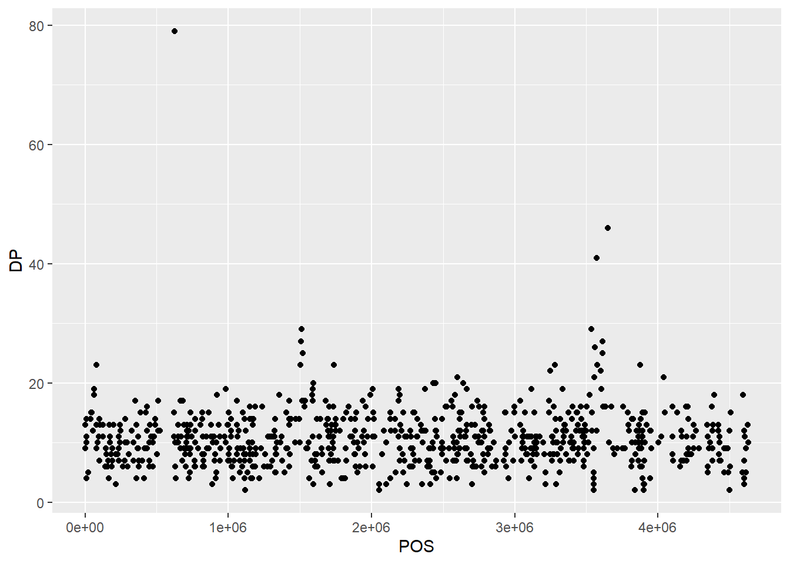
The + in the ggplot2 package is particularly useful because it allows you to modify existing ggplot objects. This means you can easily set up plot templates and conveniently explore different types of plots, so the above plot can also be generated with code like this:
# Assign plot to a variable
coverage_plot <- ggplot(data = variants, aes(x = POS, y = DP))
# Draw the plot
coverage_plot +
geom_point()Notes
- Anything you put in the
ggplot()function can be seen by any geom layers that you add (i.e., these are universal plot settings). This includes the x- and y-axis mapping you set up inaes(). - You can also specify mappings for a given geom independently of the mappings defined globally in the
ggplot()function. - The
+sign used to add new layers must be placed at the end of the line containing the previous layer. If, instead, the+sign is added at the beginning of the line containing the new layer,ggplot2will not add the new layer and will return an error message.
# This is the correct syntax for adding layers
coverage_plot +
geom_point()
# This will not add the new layer and will return an error message
coverage_plot
+ geom_point()Building your plots iteratively
Building plots with ggplot2 is typically an iterative process. We start by defining the dataset we’ll use, lay out the axes, and choose a geom:
ggplot(data = variants, aes(x = POS, y = DP)) +
geom_point()
Then, we start modifying this plot to extract more information from it. For instance, we can add transparency (alpha) to avoid over-plotting:
ggplot(data = variants, aes(x = POS, y = DP)) +
geom_point(alpha = 0.5)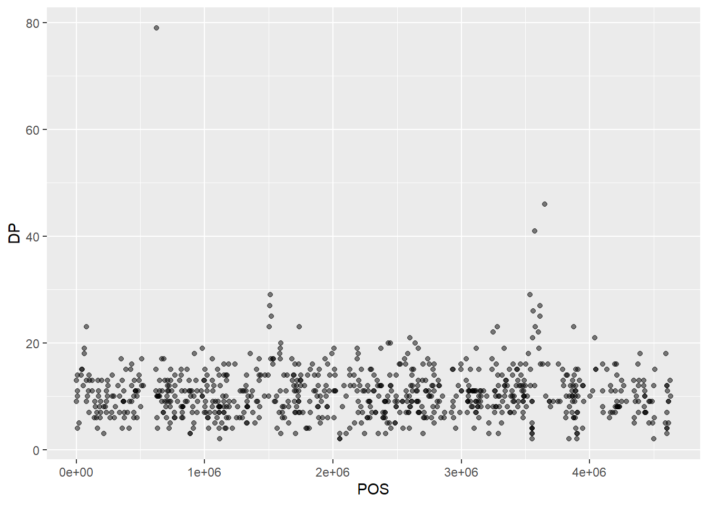
We can also add colors for all the points:
ggplot(data = variants, aes(x = POS, y = DP)) +
geom_point(alpha = 0.5, color = "blue")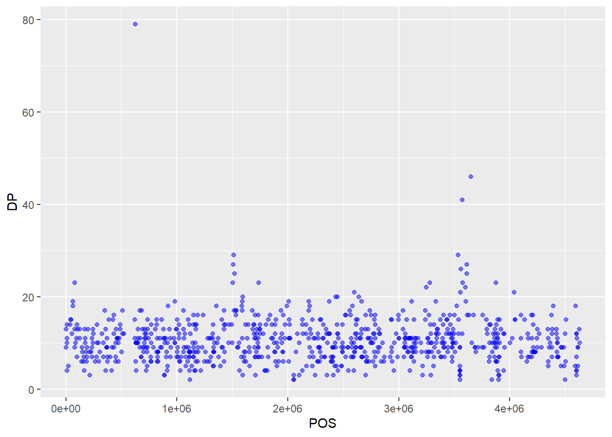
Or to color each species in the plot differently, you could use a vector as an input to the argument color. ggplot2 will provide a different color corresponding to different values in the vector. Here is an example where we color with sample_id:
ggplot(data = variants, aes(x = POS, y = DP, color = sample_id)) +
geom_point(alpha = 0.5)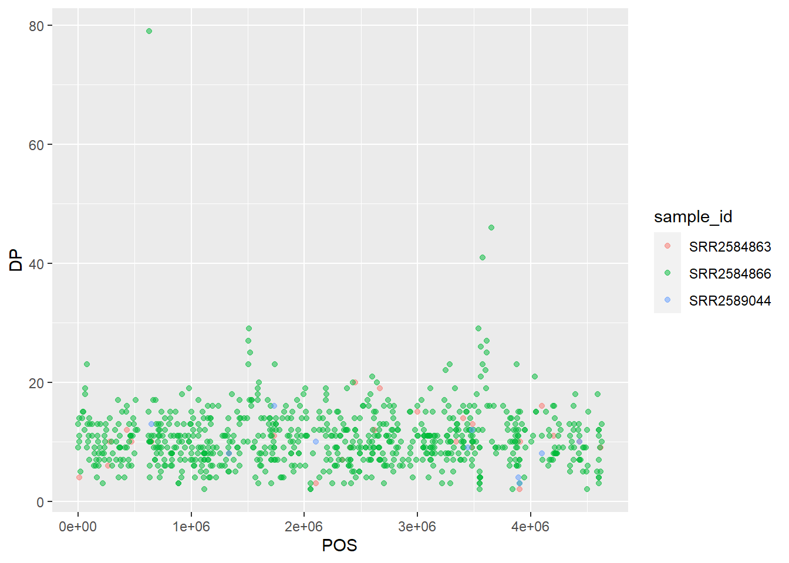
Notice that we can change the geom layer and colors will be still determined by sample_id
ggplot(data = variants, aes(x = POS, y = DP, color = sample_id)) +
geom_point(alpha = 0.5)To make our plot more readable, we can add axis labels:
ggplot(data = variants, aes(x = POS, y = DP, color = sample_id)) +
geom_point(alpha = 0.5) +
labs(x = "Base Pair Position",
y = "Read Depth (DP)")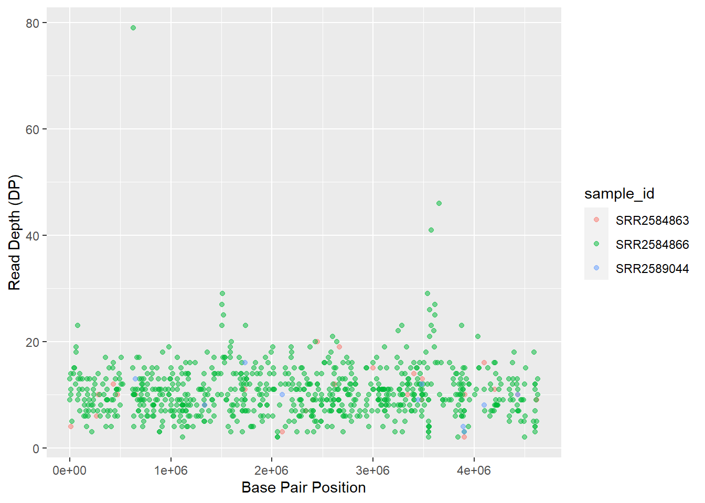
To add a main title to the plot, we use ggtitle():
ggplot(data = variants, aes(x = POS, y = DP, color = sample_id)) +
geom_point(alpha = 0.5) +
labs(x = "Base Pair Position",
y = "Read Depth (DP)") +
ggtitle("Read Depth vs. Position")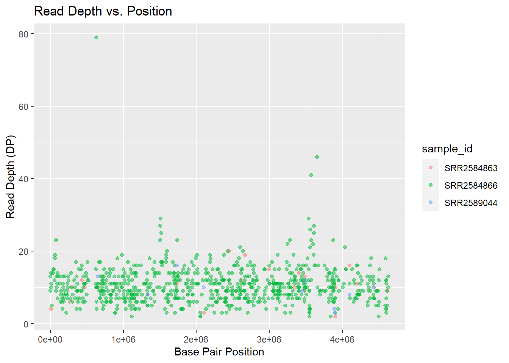
Now the figure is complete and ready to be exported and saved to a file. This can be achieved easily using ggsave(), which can write, by default, the most recent generated figure into different formats (e.g., jpeg, png, pdf) according to the file extension. So, for example, to create a pdf version of the above figure with a dimension of \(6\times4\) inches:
ggsave ("depth.pdf", width = 6, height = 4)If we check the current working directory, there should be a newly created file called depth.pdf with the above plot.
Challenge
Use what you just learned to create a scatter plot of mapping quality (MQ) over position (POS) with the samples showing in different colors. Make sure to give your plot relevant axis labels.
Solution (Solution).
ggplot(data = variants, aes(x = POS, y = MQ, color = sample_id)) +
geom_point() +
labs(x = "Base Pair Position",
y = "Mapping Quality (MQ)")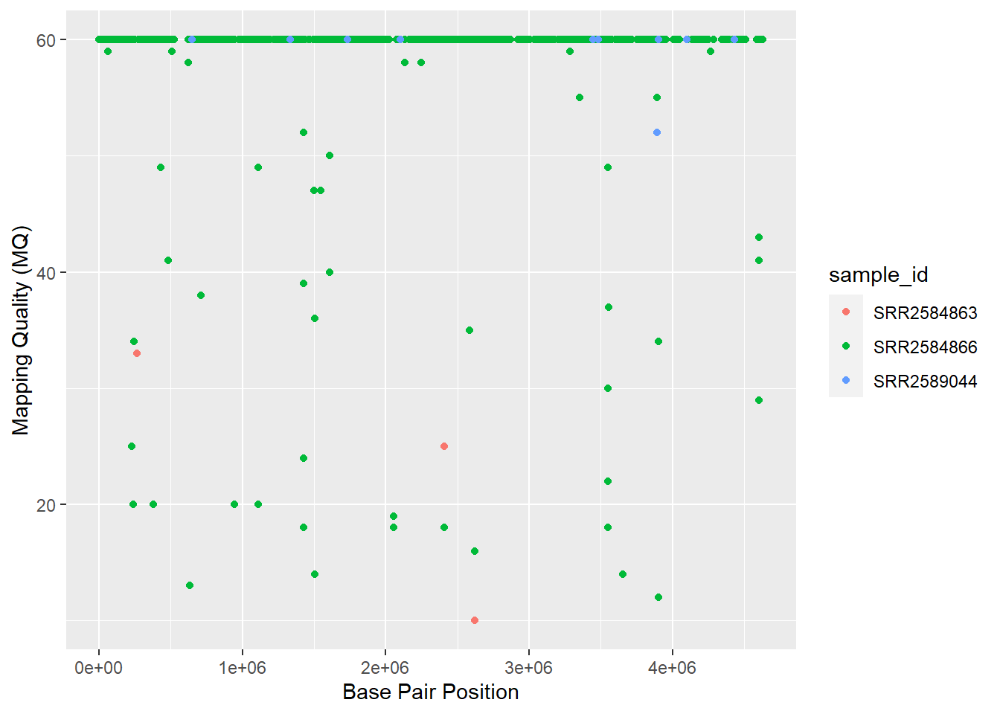
To further customize the plot, we can change the default font format:
ggplot(data = variants, aes(x = POS, y = DP, color = sample_id)) +
geom_point(alpha = 0.5) +
labs(x = "Base Pair Position",
y = "Read Depth (DP)") +
ggtitle("Read Depth vs. Position") +
theme(text = element_text(family = "Bookman"))Warning in grid.Call(C_stringMetric, as.graphicsAnnot(x$label)): font family
not found in Windows font database
Warning in grid.Call(C_stringMetric, as.graphicsAnnot(x$label)): font family
not found in Windows font databaseWarning in grid.Call(C_textBounds, as.graphicsAnnot(x$label), x$x, x$y, : font
family not found in Windows font databaseWarning in grid.Call(C_stringMetric, as.graphicsAnnot(x$label)): font family
not found in Windows font databaseWarning in grid.Call(C_textBounds, as.graphicsAnnot(x$label), x$x, x$y, : font
family not found in Windows font database
Warning in grid.Call(C_textBounds, as.graphicsAnnot(x$label), x$x, x$y, : font
family not found in Windows font database
Warning in grid.Call(C_textBounds, as.graphicsAnnot(x$label), x$x, x$y, : font
family not found in Windows font database
Warning in grid.Call(C_textBounds, as.graphicsAnnot(x$label), x$x, x$y, : font
family not found in Windows font database
Warning in grid.Call(C_textBounds, as.graphicsAnnot(x$label), x$x, x$y, : font
family not found in Windows font database
Warning in grid.Call(C_textBounds, as.graphicsAnnot(x$label), x$x, x$y, : font
family not found in Windows font database
Warning in grid.Call(C_textBounds, as.graphicsAnnot(x$label), x$x, x$y, : font
family not found in Windows font database
Warning in grid.Call(C_textBounds, as.graphicsAnnot(x$label), x$x, x$y, : font
family not found in Windows font database
Warning in grid.Call(C_textBounds, as.graphicsAnnot(x$label), x$x, x$y, : font
family not found in Windows font database
Warning in grid.Call(C_textBounds, as.graphicsAnnot(x$label), x$x, x$y, : font
family not found in Windows font databaseWarning in grid.Call.graphics(C_text, as.graphicsAnnot(x$label), x$x, x$y, :
font family not found in Windows font databaseWarning in grid.Call(C_textBounds, as.graphicsAnnot(x$label), x$x, x$y, : font
family not found in Windows font database
Warning in grid.Call(C_textBounds, as.graphicsAnnot(x$label), x$x, x$y, : font
family not found in Windows font database
Warning in grid.Call(C_textBounds, as.graphicsAnnot(x$label), x$x, x$y, : font
family not found in Windows font databaseFaceting
ggplot2 has a special technique called faceting that allows the user to split one plot into multiple plots (panels) based on a factor (variable) included in the dataset. We will use it to split our mapping quality plot into three panels, one for each sample.
ggplot(data = variants, aes(x = POS, y = MQ, color = sample_id)) +
geom_point() +
labs(x = "Base Pair Position",
y = "Mapping Quality (MQ)") +
facet_grid(. ~ sample_id)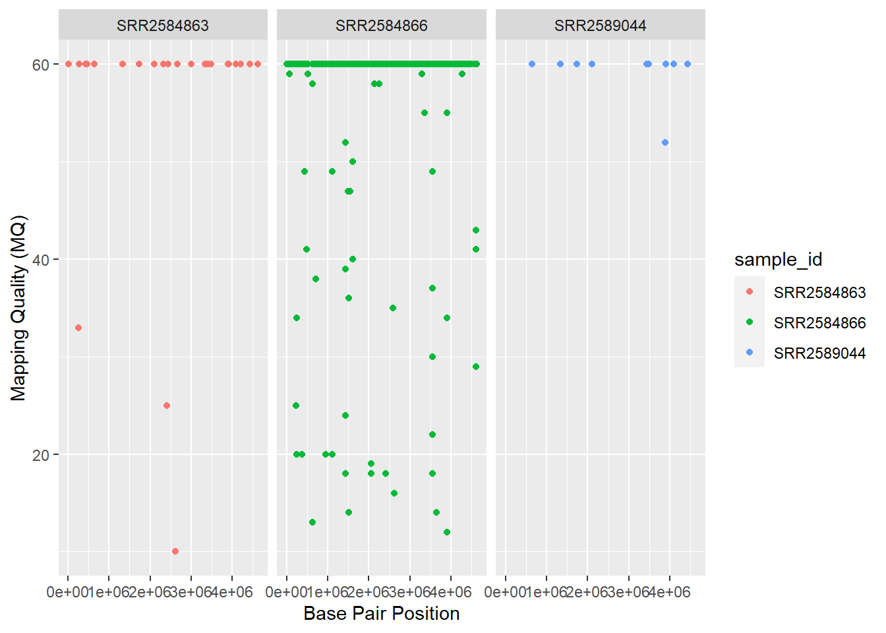
This looks okay, but it would be easier to read if the plot facets were stacked vertically rather than horizontally. The facet_grid geometry allows you to explicitly specify how you want your plots to be arranged via formula notation (rows ~ columns; the dot (.) indicates every other variable in the data i.e., no faceting on that side of the formula).
ggplot(data = variants, aes(x = POS, y = MQ, color = sample_id)) +
geom_point() +
labs(x = "Base Pair Position",
y = "Mapping Quality (MQ)") +
facet_grid(sample_id ~ .)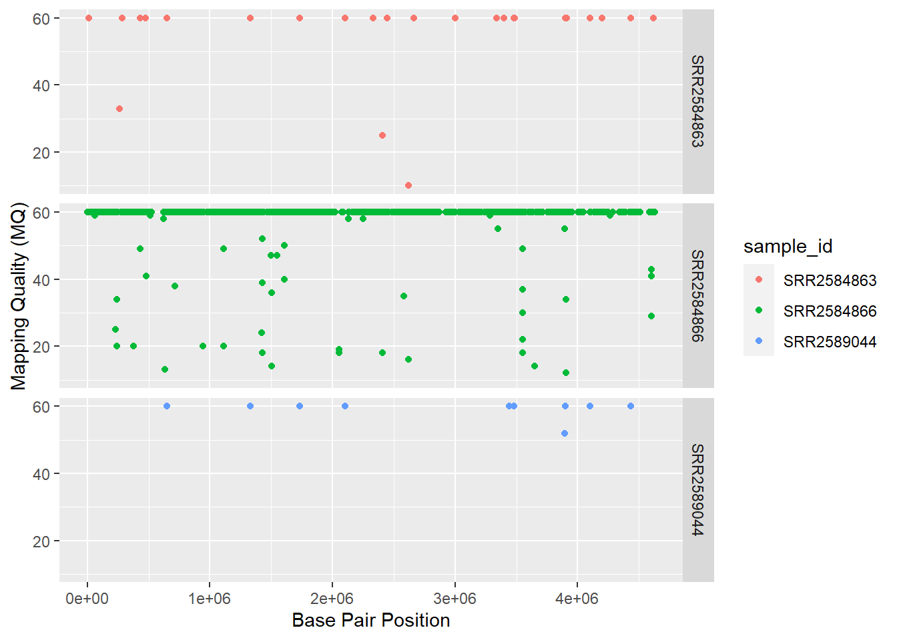
Usually plots with white background look more readable when printed. We can set the background to white using the function theme_bw(). Additionally, you can remove the grid:
ggplot(data = variants, aes(x = POS, y = MQ, color = sample_id)) +
geom_point() +
labs(x = "Base Pair Position",
y = "Mapping Quality (MQ)") +
facet_grid(sample_id ~ .) +
theme_bw() +
theme(panel.grid = element_blank())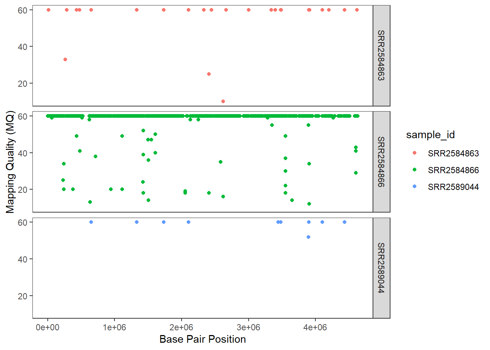
Challenge
Use what you just learned to create a scatter plot of PHRED scaled quality (QUAL) over position (POS) with the samples showing in different colors. Make sure to give your plot relevant axis labels.
Solution (Solution).
ggplot(data = variants, aes(x = POS, y = QUAL, color = sample_id)) +
geom_point() +
labs(x = "Base Pair Position",
y = "PHRED-sacled Quality (QUAL)") +
facet_grid(sample_id ~ .)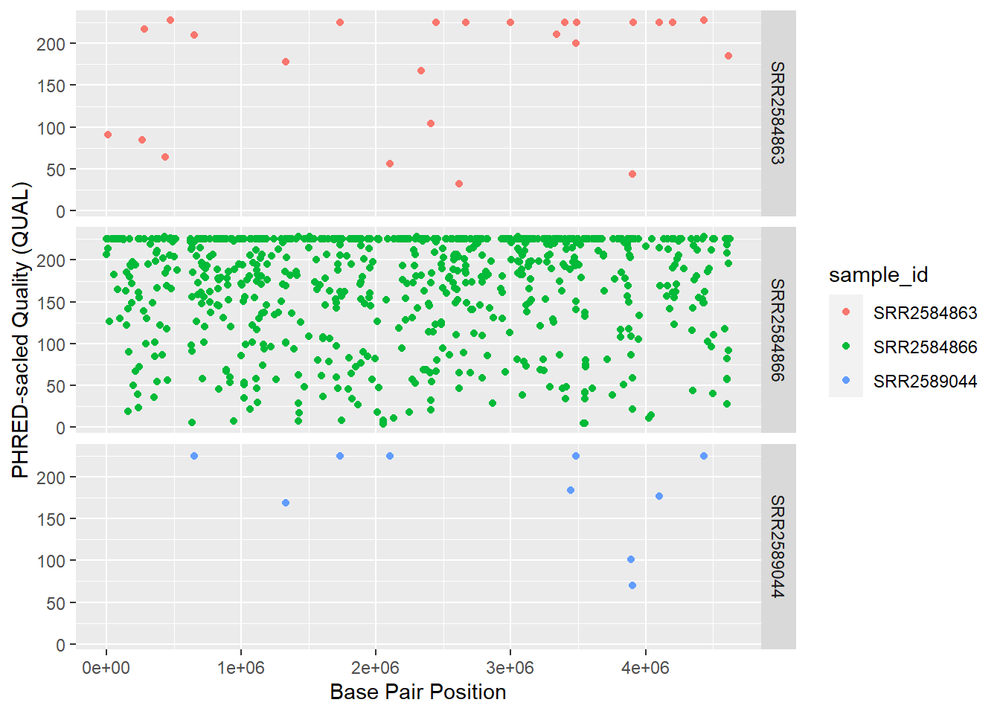
Barplots
We can create barplots using the geom_bar geom. Let’s make a barplot showing the number of variants for each sample that are indels.
ggplot(data = variants, aes(x = INDEL, fill = sample_id)) +
geom_bar() +
facet_grid(sample_id ~ .)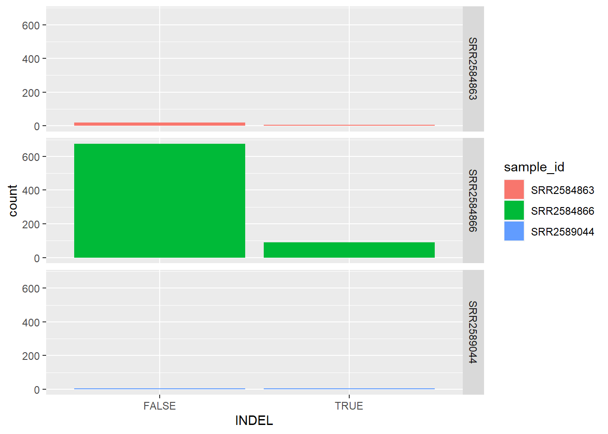
Challenge
Since we already have the sample_id labels on the individual plot facets, we don’t need the legend. Use the help file for geom_bar and any other online resources you want to use to remove the legend from the plot.
Solution (Solution).
ggplot(data = variants, aes(x = INDEL, color = sample_id)) +
geom_bar(show.legend = F) +
facet_grid(sample_id ~ .)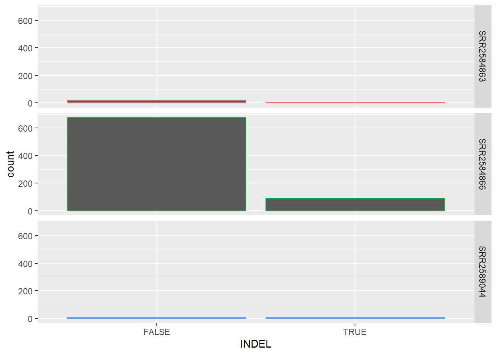
Density
We can create density plots using the geom_density geom that shows the distribution of of a variable in the dataset. Let’s plot the distribution of DP
ggplot(data = variants, aes(x = DP)) +
geom_density()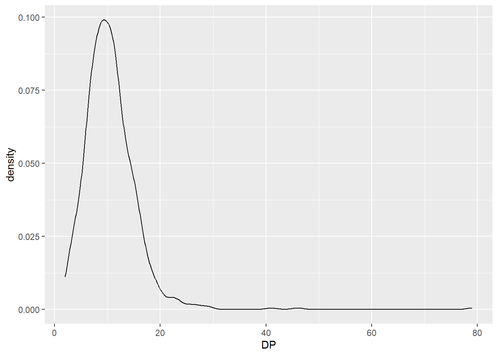
This plot tells us that the most of frequent DP (read depth) for the variants is about 10 reads.
Challenge
Use geom_density to plot the distribution of DP with a different fill for each sample. Use a white background for the plot.
Solution (Solution).
ggplot(data = variants, aes(x = DP, fill = sample_id)) +
geom_density(alpha = 0.5) +
theme_bw()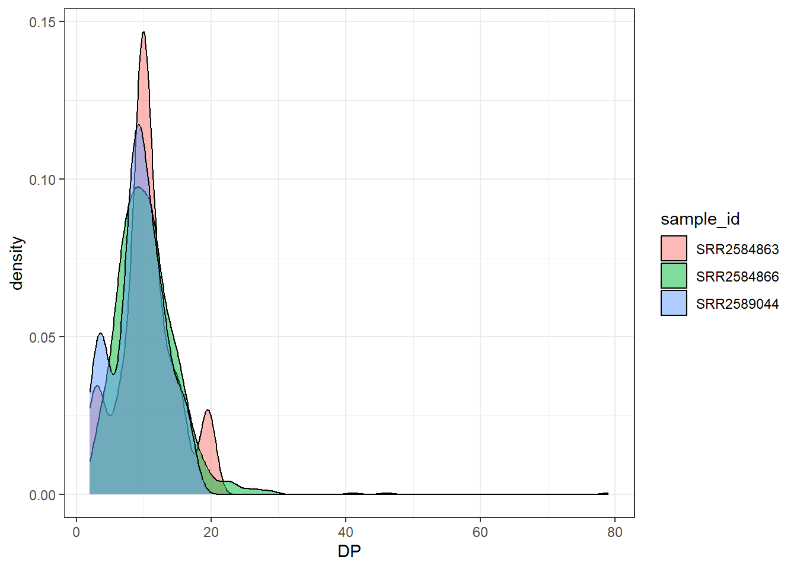
ggplot2 themes
In addition to theme_bw(), which changes the plot background to white, ggplot2 comes with several other themes which can be useful to quickly change the look of your visualization. The complete list of themes is available at https://ggplot2.tidyverse.org/reference/ggtheme.html. theme_minimal() and theme_light() are popular, and theme_void() can be useful as a starting point to create a new hand-crafted theme.
The ggthemes package provides a wide variety of options (including Microsoft Excel, old and new). The ggplot2 extensions website provides a list of packages that extend the capabilities of ggplot2, including additional themes.
Challenge
With all of this information in hand, please take another five minutes to either improve one of the plots generated in this exercise or create a beautiful graph of your own. Use the RStudio ggplot2 cheat sheet for inspiration. Here are some ideas:
- See if you can change the size or shape of the plotting symbol.
- Can you find a way to change the name of the legend? What about its labels?
- Try using a different color palette (see the Cookbook for R.
More ggplot2 Plots
ggplot2 offers many more informative and beautiful plots (geoms) of interest for biologists (although not covered in this lesson) that are worth exploring, such as
geom_tile(), for heatmaps,geom_jitter(), for strip charts, andgeom_violin(), for violin plots
Resources
- ggplot2: Elegant Graphics for Data Analysis (online version)
- The Grammar of Graphics (Statistics and Computing)
- Data Visualization: A Practical Introduction (online version)
- The R Graph Gallery (the book)
- ggplot2 is a powerful tool for high-quality plots
- ggplot2 provides a flexiable and readable grammar to build plots